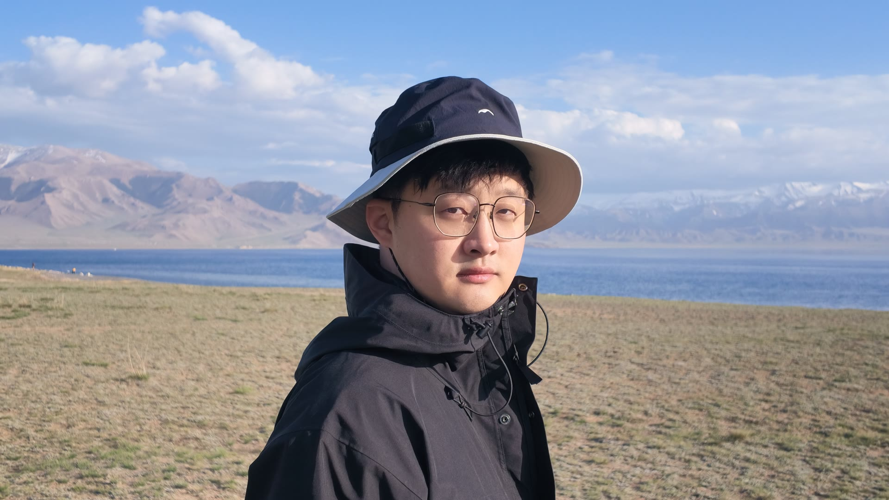

Helei Yang 杨贺磊
I am a Senior Algorithm Engineer on Alibaba's Qwen medical foundation model team. I work on agent post-training and multimodal multi-agent applications, including Skills data, tool environments, and training observability.
Previously, I led the Motion Control and Manipulation team at the Robotics Institute, Zhejiang University, working on humanoid control and VLA systems. Before that, I worked on end-to-end planning evaluation and closed-loop optimization at NIO.
My research interests are agent post-training, robot learning, and reinforcement learning.
Education
2021.09 — 2024.03
Zhejiang University of Technology
B.Eng. in AutomationExperience
Alibaba Group
Qwen Medical Foundation Models / Senior Algorithm EngineerRobotics Institute, Zhejiang University
Haichuang Humanoid Robotics Innovation Center · Strong Brain Division / Motion Control and Manipulation Team LeadNIO Software Technology (Shanghai) Co., Ltd.
Product Feature Development / Algorithm EngineerSelected Projects
All projects →Project demo
Whole-Body Control for Humanoid Table Tennis
Led system architecture, policy training, and real-robot deployment, achieving a longest continuous rally of 200+ returns. The project was featured on CCTV News and exhibited internationally at AI & Digital Bridge 2026.
Whole-body control · Reinforcement learning · Sim-to-real
Project details →Project demo
Multimodal Image Generation and Robotic Sketching
Extracts portraits from photos, generates cartoon line art, and plans drawing trajectories for Franka and Elephant Robotics ultraArm P340, connecting photos to drawings on paper.
Multimodal image generation · Trajectory planning · Robotic drawing
Project details →Project demo
VLA Data Collection, Fine-Tuning, and Real-Robot Experiments
Collected teleoperation data, fine-tuned π0 / π0.5, and deployed on Franka for grasping and a long-horizon task: opening a drawer, storing three marker pens, and closing it.
VLA · Imitation learning · Franka
Project details →